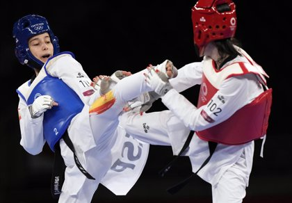

1 / 6

2 / 6

3 / 6
4 / 6

5 / 6
6 / 6
HISTORIA
|
Después de la ocupación coreana por Japón, el Sistema Educativo Japonés se impuso en las escuelas coreanas y se enseñaron formas deportivas como de Judo y Kendo.
En 1909, Japón prohibió la práctica de las artes marciales en Corea, donde existían dos formas de lucha muy populares, el Sirum, lucha tradicional coreana similar a la lucha Canaria, con la que en tiempos recientes se han realizado algunos enfrentamientos amistosos, y al Tae Kyon que fue totalmente prohibido durante la ocupación por lo que el antiguo Subak y el más antiguo Tae Kyon, que es practicado en secreto por un grupo muy reducido de simpatizantes. Choi, que seria el primer presidente de la Asociación Coreana de Taekwondo estudia caligrafía con Han Il Dong en 1930, y éste le introduce en el conocimiento del Tae Kyon. Otro estudiante de las artes prohibidas fue Hwang Kee, el futuro fundador del Tang Soo Do. Kee conoce el Tae Kyon y el Soo Bak. En 1936 a la edad de 22 años efectúa un viaje a el Norte de China donde estudia el método de la escuela T'ang, y trabaja hasta 1945 en la combinación de ambos estilos. Hong Hi Choi, es enviado a Kyoto en 1937 para fomentar su educación, en donde conoce al señor Kim, un maestro coreano del que aprende Karate Shotocan durante dos años, hasta que obtiene su primer Dan, luego se dirigió a la Universidad de Tokio donde conseguirá el segundo Dan. En 1943 Japón levanta la prohibición y el Kung fu, Judo y el Karate gozan de gran popularidad entre los coreanos. Ello, hace que se desarrolle mucho el conocimiento del Karate, sobre todo el Shotokan, ya que muchos coreanos estuvieron residiendo en Japón sobre todo los de clase alta, que podían recibir una educación más selecta. Lo anterior produjo que cuando Corea recobra su independencia, las artes marciales japonesas eran muy populares mientras que las coreanas sólo eran conocidas por una minoría, y estimadas como de inferior categoría. Estas partían con la gran influencia que en mayor medida habían tenido las técnicas lineales del Karate Japonés sobre las circulares del Kung Fu chino que predominaban en los estilos originales. Lo anterior marcó una nueva etapa en la evolución y desarrollo de las artes marciales en Corea. Estos maestros dan nombres particulares a cada una de las escuelas que emergieron en esos momentos en Corea del Sur, como Bang Soo Do, Kong Soo Do, (Mano Vacía) Kwon Bop, Tae Soo Do (la forma de pie y la mano) y Tang Soo Do (Escuela de la Mano de T'ang), también hay otras como "Tae-kyon","Tang- su","kong-Su","kwon-Pop, "Soo-Bak Do", etcétera. Varias escuelas abren rápidamente en Seúl. La primera en abrir es la escuela Chung Do Kwang (Chong Hace Kwan " el Gimnasio de la Ola Azul"). Esta escuela que fue fundado por Won Kook Lee en 1945, evolucionó al Tang Soo Do. Su fundador Won Kook Lee, estudió el Karate Shotokan. Sus formas son prácticamente iguales a las de éste estilo, con posturas más amplias, pero finalizada la guerra, Gong diseñó un nuevo estilo, para los militares basado en el antiguo arte coreano Tae Kyun. La escuela Moo Duk Kwan se fundó ese mismo año por Hwang Kee, quien enseño un arte llamado Tang Soo Do (Escuela de la Mano China). La tercera escuela fue Yun Muge Kwan, fundada por Yon Kue Pyang. El 1 de septiembre de 1946, se crea el estilo de Taekyon, Chang Moo Kwan, fundado por Byung In Yoon, quien estableció su escuela en el instituto de agricultura de Seúl. El Maestro Byung fue criado en Manchuria en donde había sido instruido en el "Chuan Fa". Luego fue enviado a la Universidad de Tokio, en donde conoció al fundador del Karate Shudokan, el maestro Kaken Toyama, el cual le otorgó el 4º Dan. El Maestro desaparece en la Guerra de Corea y tras finalizar ésta, Nan Suk Lee se le nombra en 1953 como presidente. La Asociación Coreana de Judo se formó en 1945 y en 1946, se comienza a enseñar Tae Kyon (como algunos denominaban a las los nuevos estilos de Karate Coreano) a las tropas en Kwang Ju. En 1947, Hong Hi Choi es teniente del Ejercito Coreano y al año siguiente llega a ser instructor de artes marciales de la escuela estadounidense de policía militar de Seúl y en 1949, el coronel Choi visita la Escuela General de Kansas, donde da una demostración del Karate Coreano. (Tae Kyon). |
Con el comienzo de la guerra entre las dos Coreas en 1950, las artes marciales coreanas atraen la atención, en 1952 el Presidente Syngman Rhee presenció una demostración de maestros coreanos, y se decidió que el Tae Kyon comenzara a ser enseñado a todas las fuerzas militares. Después de la guerra aparecieron tres escuelas más. En 1953-54 Gae Byang Yung, fundó la Ji Do Kwan. Posteriormente Byung Chik Ro, funda la escuela Song Moo Kwan y Hong Hi Choi, la Oh Do Kwan (Gimnasio de mi método) con la ayuda de Tae Hi Nam. El primer paso para la unificación de las distintas escuelas de las artes marciales coreanas, se dio el 11 de abril de 1955. La mayoría de los estilos se asociaron para crear un único nombre que identificara a todas aquellas escuelas que eran conocidas en Occidente como Karate Coreano. El primer nombre que se eligió para éstas fue el de Tae Soo Do, (El Arte de la Mano China), aunque se cambió en 1957 por el de Taekwon-Do, nombre más parecido al antiguo Tae Kyon. Pero el término de Karate aunque de origen japonés, estaba muy generalizado y era más familiar para los occidentales, incluso para muchos coreanos, el Taekwondo se le seguiría conociendo como un estilo más de Karate. En 1959, Choi, hace una gira por los países del lejano Oriente con diecinueve cintos negros. Ese mismo año Choi presenta el primer trabajo autorizado sobre el Taekwondo. Hasta 1960, el Taekwondo era muy parecido al Karate Shotokan, con muy poca influencia del Tae Kyon. Este hecho hizo que cuando el Taekwondo se introdujo en occidente, se notara poca distinción con las otras escuelas de Karate, de hecho en muchos países, lo recogieron dentro de sus federaciones o asociaciones de Karate, y fuera conocido popularmente como Karate Coreano. El 14 de septiembre de 1961, se funda la asociación Coreana de Taekwondo (KTA) eligiéndose a Hong Hi Choi como Presidente, pero la asociación Jhi Do Kwan decide separarse de ésta línea, igualmente el Chung Do Kwan. El mayor gimnasio de Corea, también permaneció separado con su Asociación Soo Bahk Do, un gran rival para la KTA. El gobierno coreano toma partido en ésta disputa, cuando en 1962 reconoce a todos los cintos negros certificados por la KTA. Ello, ocasiona que muchos artistas marciales de las otras asociaciones se integren en la KTA. El Taekwondo tras el apoyo del gobierno coreano, comienza su rápida expansión Mundial de la mano de la KTA. En 1962, se envía desde el Oh Do Kwan a Tae Hi Nam y tres instructores más a Vietnam del Sur, para instruir a las tropas vietnamitas durante un año. En 1962-63 El Taekwondo entra en Tailandia, Malasia y Hong Kong. En 1963, Choi realiza una gira por Estados Unidos y en 1964 Chong Lee, Introduce el Taekwondo a Canadá. En 1965, Choi hace una gira para introducir el Taekwondo en Alemania del Oeste, Italia, Turquía, Emiratos Árabes Unidos, Malasia Y Singapur y en 1966, Park Jong Soo introduce el Taekwondo en los Países Bajos. Las asociaciones de Tang Soo Do, cambiaron al nuevo T.K.D. menos una, MOO DUK KWAN (de Hwang Ki), él cual siguió con el nombre de Tang Soo Do, y lo registró como asociación oficial. Paralelamente se desarrolla otro movimiento: El "Tang-Su-Do- karate". En 1966, a causa de una desafortunada demostración del Taekwondo en Corea del Norte, Chois pierde el apoyo del Gobierno de Corea del Sur, y se encuentra obligado a renunciar a la Presidencia de la KTA. Choi con la intención de mantener el control sobre Taekwondo fuera de Corea, fundaría en poco tiempo, la Federación Internacional de Taekwondo (ITF). Este hecho no sería bien visto por el Gobierno Coreano, por lo que Choi abandonaría Corea y se establecería con su ITF en Canadá, con la intención de retomar la influencia que había tenido en los maestros coreanos de todo el Mundo, pero la gran mayoría se mantuvo fiel a la KTA, organización que representaba Oficialmente al Taekwondo y a la cual el Gobierno Coreano había dado su respaldo y homologación, permitiéndole convertirse en la mayor y más importante Asociación de Taekwondo en Corea. |